1080B62 CATALYTIC CONVERTER - R + R
- Path
- Procedures > 10 ENGINE UNIT > 1080 EXHAUST EMISSION CONTROL SYSTEM > 1080B EXHAUST EMISSION CONTROL SYSTEM > 1080B62 CATALYTIC CONVERTER - R + R
- Kind
- repair procedure (removal / refitting; the operation number is the code)
- Applies to
- engines: 1.8 T.SPARK, 2.0 JTS, 1.9 JTD 16V; all production periods
- Interactive page
- https://sloeber94.github.io/elrnDB-aGt/en/#/125001122
Applies to: engines: 2.0 JTS; all production periods
 Removing
Removing
 Refitting
RefittingPosition the vehicle on a lift.
Make sure that the ignition key is in the OFF position, then disconnect the negative battery terminal.
Description | Connector | |
|---|---|---|
- | Battery | See A1B BATTERY ( BATTERY NEGATIVE ) |
Drain the air conditioning refrigerant circuit
Op. 0010T84 COOLANT FOR AIR CONDITIONING SYSTEM DEHYDRATE AND RECHARGE.
Proceed with the removal
Op. 4450B04 RIGHT FRONT WHEEL R R.
Proceed with the removal
Op. 7055B54 UNDER-ENGINE GUARD - R R.
Proceed with the removal
Op. 5040A20 AIR CONDITIONER COMPRESSOR - R+R - INCLUDES FLUID LEVEL CHECK AND TOP UP IF NECESSARY.
Proceed with the removal
Op. 5040A26 COMPRESSOR MOUNT - R R.
Proceed with the removal
Op. 1016A40 IGNITION COIL COVER ON CYLINDER HEAD- R+R.
Proceed with the removal
Op. 1076A48 CATALYTIC CONVERTER HEAT SHIELD - R R.
1. Disconnect the electrical connection for the right rear Lambda sensor at the catalytic converter and release it from the mounting bracket.
Description | Connector | |
|---|---|---|
1 | Lambda sensor on catalyzer - 2 | See K18 LAMBDA SENSOR ON CATALYZER 2 ( CONNECTORS ) |
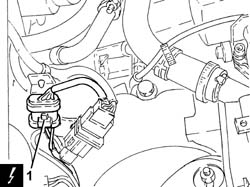
Applies to: engines: 2.0 JTS; all production periods
1. Disconnect the electrical connection for the left Lambda sensor and release it from the mounting bracket.
Description | Connector | |
|---|---|---|
1 | Lambda sensor on pre-catalyzer | See K15 LAMBDA SENSOR ON PRE-CATALYZER |
2. Disconnect the electrical connection for the left rear Lambda sensor at the catalytic converter and release it from the mounting bracket.
Description | Connector | |
|---|---|---|
2 | Lambda sensor on catalyzer | See K17 LAMBDA SENSOR ON CATALYZER ( CONNECTORS ) |
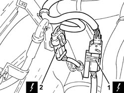
Applies to: engines: 2.0 JTS; all production periods
1. Undo the nuts fixing the catalytic converter to the cylinder head.
2. Undo the bolt fixing the guide pipe for the engine oil dipstick to the water pump rigid inlet pipe.
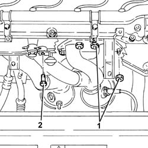
Applies to: engines: 2.0 JTS; all production periods
1. Undo the bolts fixing the catalytic converter to the front section of the exhaust pipe.
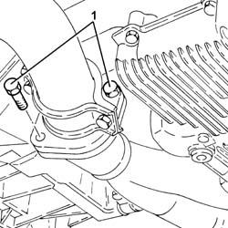
Applies to: engines: 2.0 JTS; all production periods
1. Remove the catalytic converter (1a) complete with Lambda sensor (1b).
2. Remove the gasket between the catalytic converter and the front section of the exhaust pipe.
3. Remove the gasket between the catalytic converter and the cylinder head.
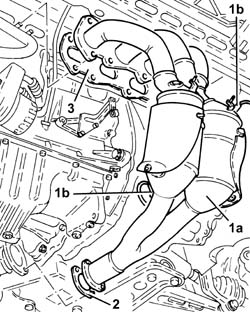
Applies to: engines: 2.0 JTS; all production periods
Refitting
RemovingRefit the catalytic converter complete with gaskets in position.
1. Tighten the bolts fixing the catalytic converter to the front section of the exhaust pipe to the recommended torque .
Fastening | Component | Ø | Value (daNm) | |
|---|---|---|---|---|
1 | Bolt | CATALYTIC CONVERTER (ONE) | M8 | (Exhaust pipe front section side) 2.3 - 2.8 |
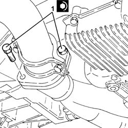
Applies to: engines: 2.0 JTS; all production periods
1. Tighten the bolt fixing the guide pipe for the engine oil dipstick to the water pump rigid inlet pipe.
2. Tighten the nuts fixing the catalytic converter to the cylinder head to the recommended torque.
Fastening | Component | Ø | Value (daNm) | |
|---|---|---|---|---|
2 | Nut | CATALYTIC CONVERTER (ONE) | M8 | (Cylinder head side) 2.3 - 2.8 |
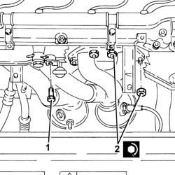
Applies to: engines: 2.0 JTS; all production periods
Connect the electrical connection for the left rear Lambda sensor to the catalytic converter and fasten it to the mounting bracket.
Connect the electrical connection for the left Lambda sensor and secure it to the mounting bracket.
Connect the electrical connection for the right rear Lambda sensor to the catalytic converter and fasten it to the mounting bracket.
Proceed with the refitting
Op. 1076A48 CATALYTIC CONVERTER HEAT SHIELD - R R.
Proceed with the refitting
Op. 1016A40 IGNITION COIL COVER ON CYLINDER HEAD- R+R.
Proceed with the refitting
Op. 5040A26 COMPRESSOR MOUNT - R R.
Proceed with the refitting
Op. 5040A20 AIR CONDITIONER COMPRESSOR - R+R - INCLUDES FLUID LEVEL CHECK AND TOP UP IF NECESSARY.
Proceed with the refitting
Op. 7055B54 UNDER-ENGINE GUARD - R R.
Proceed with the refitting
Op. 4450B04 RIGHT FRONT WHEEL R R.
Refill the air conditioning refrigerant circuit
Op. 0010T84 COOLANT FOR AIR CONDITIONING SYSTEM DEHYDRATE AND RECHARGE.
Connect the negative battery terminal (-).
Remove the vehicle from the lift.
Applies to: engines: 1.9 JTD 16V; all production periods
Removing
RefittingPosition the vehicle on a lift.
1. Undo the nuts fixing the catalytic converter to the front section of the exhaust pipe.
2. Undo the bolts fixing the catalytic converter to the exhaust pipe rigid pipe.
3. Remove the catalytic converter (3a) after having released it from the flexible mountings (3b).
Remove the seals.
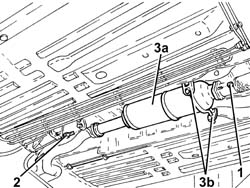
Applies to: engines: 1.9 JTD 16V; all production periods
Refitting
Removing1. Place the catalytic converter (1a) back in its housing complete with gaskets and secure it to the flexible mountings (1b).
2. Tighten the bolts fixing the catalytic converter to the exhaust pipe rigid pipe to the recommended torque .
Fastening | Component | Ø | Value (daNm) | |
|---|---|---|---|---|
2 | Bolt | CATALYTIC CONVERTER (ONE) | M8 | (Rigid pipe side) 2.3 - 2.8 |
3. Tighten the nuts fixing the catalytic converter to the front section of the exhaust pipe to the recommended torque .
Fastening | Component | Ø | Value (daNm) | |
|---|---|---|---|---|
3 | Nut | CATALYTIC CONVERTER (ONE) | M8 | (Exhaust pipe front section side) 2.3 - 2.8 |
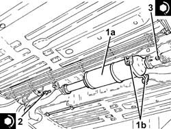
Applies to: engines: 1.9 JTD 16V; all production periods
Remove the vehicle from the lift.
Applies to: engines: 1.8 T.SPARK; all production periods
Removing
RefittingPosition the vehicle on a lift.
Make sure that the ignition key is in the OFF position, then disconnect the negative battery terminal.
Description | Connector | |
|---|---|---|
- | Battery | Vedere A1B BATTERIA ( CABLAGGI ) |
1. Disconnect the electrical connection for the Lambda sensor.
Description | Connector | |
|---|---|---|
1 | Lambda sensor downstream of the post-converter | Vedere K17 SONDA LAMBDA A VALLE DEL POST-CATALIZZATORE ( MOTORE ) |

Applies to: engines: 1.8 T.SPARK; all production periods
1. Release the electrical wiring for the Lambda sensor from the fastenings.
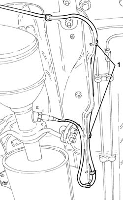
Applies to: engines: 1.8 T.SPARK; all production periods
1. Undo the nuts fixing the catalytic converter to the catalytic preconverter.
2. Undo the bolts fixing the catalytic converter to the intermediate exhaust silencer.
3. Undo the bolts (3a) for the flexible supports and remove the catalytic converter (3b) complete with Lambda sensor (3c) and gaskets.

Applies to: engines: 1.8 T.SPARK; all production periods
Refitting
Removing1. Place the catalytic converter (1a) complete with Lambda sensor (1b) and gaskets in position.
2. Tighten the flexible support bolts.
3. Tighten the bolts fixing the catalytic converter to the intermediate exhaust silencer to the recommended torque.
Fastening | Component | Ø | Value (daNm) | |
|---|---|---|---|---|
3 | Bolt | CATALYTIC CONVERTER (ONE) | M8 | (Intermediate silencer side) 2.7 - 3.3 |
4. Tighten the nuts fixing the catalytic converter to the catalytic preconverter to the recommended torque.
Fastening | Component | Ø | Value (daNm) | |
|---|---|---|---|---|
4 | Nut | CATALYTIC CONVERTER (ONE) | M8 | (Catalytic preconverter side) 2.7 - 3.3 |
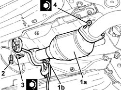
Applies to: engines: 1.8 T.SPARK; all production periods
Secure the electrical wiring for the Lambda sensor to the fastenings.
Connect the electrical connection for the Lambda sensor.
Connect the negative battery terminal (-).
Remove the vehicle from the lift.
Topics linked from this page (7)
- 0010T84 COOLANT FOR AIR CONDITIONING SYSTEM DEHYDRATE AND RECHARGE
- 1016A40 IGNITION COIL COVER ON CYLINDER HEAD- R+R
- 1076A48 CATALYTIC CONVERTER HEAT SHIELD - R R
- 4450B04 RIGHT FRONT WHEEL R R
- 5040A20 AIR CONDITIONER COMPRESSOR - R+R - INCLUDES FLUID LEVEL CHECK AND TOP UP IF NECESSARY
- 5040A26 COMPRESSOR MOUNT - R R
- 7055B54 UNDER-ENGINE GUARD - R R
Topics that link to this page (22)
- 1008A44 REAR RIGID MOUNT - R R
- 1020A20 CRANK CASE OIL SUMP - R + R CLEAN SEALS FOR SEALANT APPLICATION
- 1020D10 FRONT CRANK SHAFT OIL SEAL COVER - R + R AND REPLACE SEALS WITH TIMING BELT REMOVED
- 1020D15 FRONT CRANKSHAFT OIL SEAL COVER-R+R AND REPLACE SEALS FOR ENGINES WITH OIL PUMP ON CRANKSHAFT AND HEAT EXCHANGER
- 1020D36 FLYWHEEL END OIL SEAL - REPLACE FOR MANUAL GEARBOX WITH HYDRAULIC SELECTION VERSIONS
- 1020D38 FLYWHEEL SIDE OIL SEAL - REPLACE
- 1024B10 ENGINE FLYWHEEL - R + R FOR VERSIONS WITH MANUAL GEARBOX
- 1024B11 ENGINE FLYWHEEL - R R FOR MANUAL GEARBOX WITH HYDRAULIC SELECTION VERSIONS
- 1028H10 PISTON WITH CONNECTING ROD - R R
- 1076A48 CATALYTIC CONVERTER HEAT SHIELD - R R
- 1076B10 EXHAUST PIPE ASSEMBLY - R + R
- 1076B34 FRONT CATALYTIC CONVERTER ATTACHMENT SEAL - REPLACE
- 1084B26 EMGINE OIL INTAKE DUCT - R R
- 1810A20 CLUTCH - R + R
- 1810A28 CLUTCH - R R FOR MANUAL GEARBOX WITH HYDRAULIC SELECTION VERSIONS
- 1820A24 THRUST BEARING LINKAGE - R + R
- 2110A10 MANUAL GEARBOX AND DIFFERENTIAL - R + R
- 2110A11 MANUAL GEARBOX WITH DIFFERENTIAL - R R FOR VERSIONS WITH HYDRAULIC SELECTION
- 2110C24 SEALS FOR GEARBOX INPUT SHAFT - R R FOR MANUAL GEARBOX WITH HYDRAULIC SELECTION VERSIONS
- 4130B40 OUTLET PIPE FROM PUMP TO POWER STEERING CASE R R
- 4410D13 FRONT SUSPENSION BEAM - R R
- 4410D15 FRONT SUSPENSION BEAM COMPLETE WITH WISHBONES AND STABILISER BAR R R